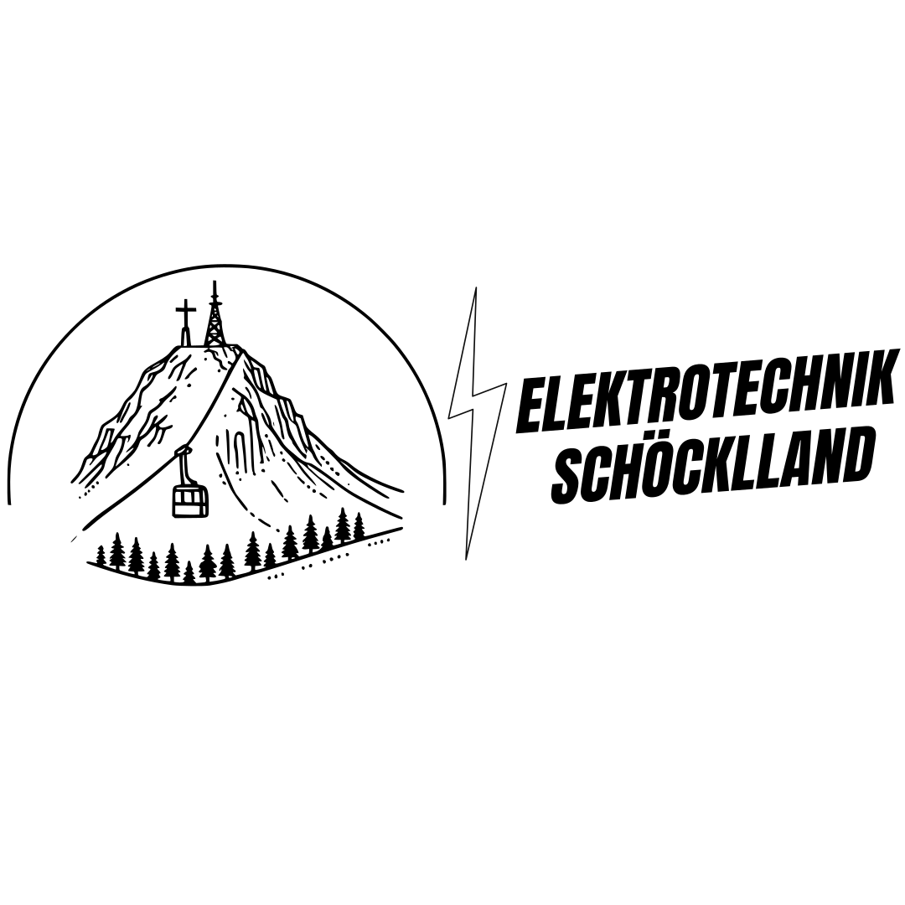
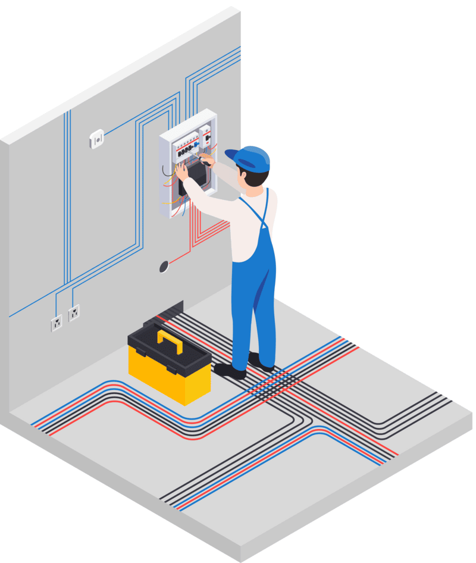
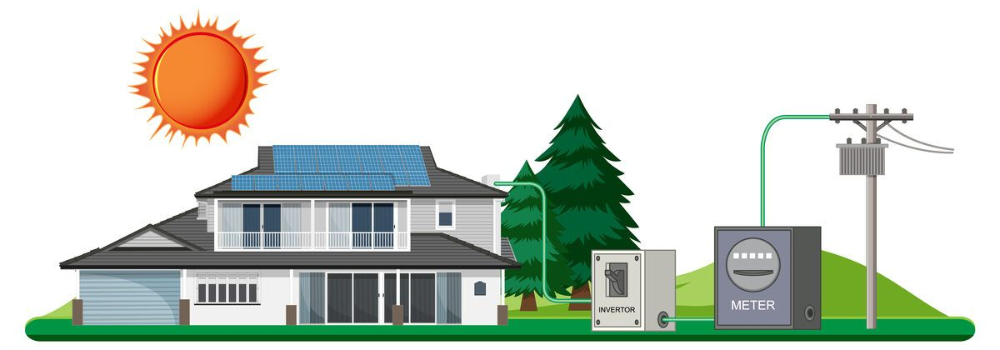

Elektrotechnik Schöcklland – Ihr Elektriker in St. Radegund bei Graz
Ihr lokaler Elektrotechniker und Photovoltaik-Experte aus St. Radegund bei Graz

Instandsetzung
Sei es eine Instandsetzung von Lampen, Klingeln, Steckdosen, etc.
Wir sind für Sie da!
Über uns
Wir sind ein erfahrenes Team von Elektrotechnikern aus St. Radegund bei Graz. Die Firma Elektrotechnik Schöcklland wurde im Jahr 2024 von Ewald Hofer übernommen und profitiert von langjähriger Erfahrung in der Branche.

Elektrotechnik Schöcklland
Unsere Leistungen im Überblick
- Elektrotechnik
- Photovoltaik und Stromspeicher
- Beleuchtungsanlagen
- Anlagenüberprüfung
- Smart Home
- Sicherheitstechnik
- Ladestationen
Wir sind Ihr Ansprechpartner für Elektrotechnik und Photovoltaik in St. Radegund bei Graz und Umgebung. Wir bieten Ihnen eine umfassende Beratung und Planung, sowie eine fachgerechte Umsetzung Ihrer Projekte. Wir sind Ihr Partner für Neubau, Altbausanierung und Erweiterung, Photovoltaik, Instandsetzung, Beleuchtungsanlagen, Anlagenüberprüfung, Smart Home, Sicherheitstechnik und Ladestationen.
Referenzen
Machen Sie sich selbst ein Bild über uns.
{kind=link}
Team
Rene Kraxner
GeschäftsführerSandra Adam
BüroUnser Team
Unsere geschätzten MitarbeiterFAQ
Antworten auf die häufigsten Fragen unserer Kunden.
Kontakt
Wir freuen uns auf Ihre Nachricht.